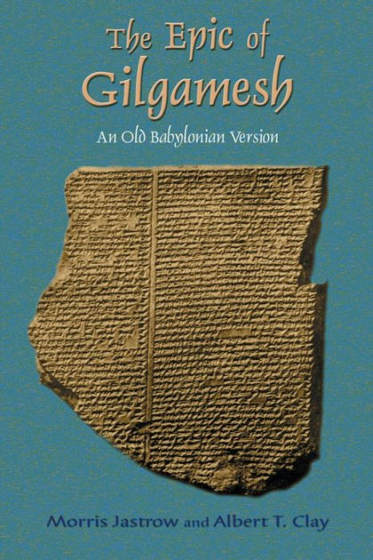

What you seek you shall never find. For when the Gods made man, they kept immortality to themselves. Fill your belly. Day and night make merry. Let Days be full of joy. Love the child who holds your hand. Let your wife delight in your embrace. For these alone are the concerns of man.
- The Epic of Gilgamesh, Siduri
After I graduate I will hopfully have already gotten a job with a company from the enterprise projects that I will have to do in school. Preferably a job that pertains to some aspect of game development. I personally would prefer if I could work on game mechanics/gameplay mechanics as that is what I am most interested in. If I get a job in software development oh well, I will work there and build some job experience and look for places hiring game developers. If I do not get a job offer from my enterprise projects I will be looking for jobs preferably in game development. Games I am interested in developing are games like Octopath traveler, turn based games. The reason why is because I enjoy those types of game quite a bit and I am interested in trying to make better turn based games.